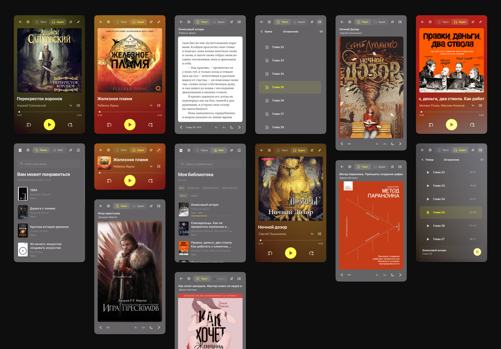

Читать и слушать
Переключайся между текстом и аудио, если у книги есть связанная версия в сервисе.
Книги и аудиокниги для macOS
Читай и слушай в своём темпе.
Поиск, твоя библиотека и любимые книги —
в одном небольшом окне.

Переключайся между текстом и аудио, если у книги есть связанная версия в сервисе.
Открытые, добавленные и законченные книги. Поиск по названию и автору, быстрые фильтры без перезагрузки.
Ищи книгу или автора. А когда запроса ещё нет, смотри подборку «Вам может понравиться».
Размер текста, день или ночь, оглавление и листание. Название и автор остаются под рукой.
Перемотка на 30 секунд, главы, скорость и таймер сна. Полный или компактный вид с цветами обложки.
При запуске открывается последняя книга. Прогресс чтения и прослушивания сохраняется через Яндекс Книги.
Внутри готовое приложение. Компилятор и инструменты разработчика не нужны.
Перетащи «Мои книги.app» в папку «Программы» или запусти Установить.command из архива.
Открой «Моё» и войди в свой аккаунт. Доступ к книгам и аудиокнигам зависит от твоего доступа к сервису.
Текст и аудио в одном приложении.
Подробная инструкция есть внутри архива.
Минимальная целевая система — macOS 13. В архиве универсальная сборка для Apple Silicon и Intel. Работа проверена на Apple Silicon; запуск на Intel и старых версиях macOS отдельно не проверялся.
Сборка имеет локальную подпись, но пока не заверена Apple для распространения. Если доверяешь источнику, после попытки запуска открой «Системные настройки → Конфиденциальность и безопасность» и подтверди открытие конкретного файла кнопкой «Всё равно открыть». Глобально отключать защиту Mac не требуется.
Виджет работает через настоящий веб-сервис Яндекса и твой аккаунт. Доступ к конкретным книгам и аудиокнигам определяется условиями сервиса и твоей подпиской. Виджет не открывает платные книги без доступа к ним.
Нет. Переключатель доступен, когда Яндекс Книги связывают текстовую и аудиоверсию произведения. Если связанной версии нет, её кнопка недоступна.
Нет. Это независимый проект Максима Чистова, работающий через сайт Яндекс Книг. Проект не связан с Яндексом. Книги, обложки, аудиозаписи и графика сервиса принадлежат соответствующим правообладателям.
Скачай новую версию с этой страницы и замени приложение в «Программах». Вход в Яндекс и настройки хранятся отдельно от приложения и сохраняются при замене.
Волна, любимые треки и очередь.
Тот же стиль, другое настроение.